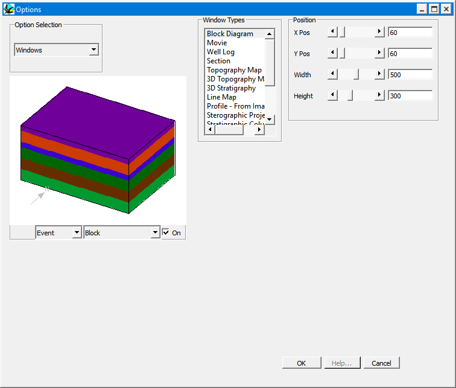

Window options
Each window type can have a user definable default size and screen position, which controls its intial appearence.

| GROUP | NAME | FUNCTION |
|---|---|---|
| Window Types | Visualisation window type | |
| Position | X | Position in screen coordinates from left of the top left corner of the currently selected window type |
| Y | Position in screen coordinates from top of the top left corner of the currently selected window type | |
| Width | Width of window in screen coordinates | |
| Hieght | Height of window in screen coordinates (not always independantly definable) |
Noddy · open source under the MIT licence · Loop3D/noddy_qt